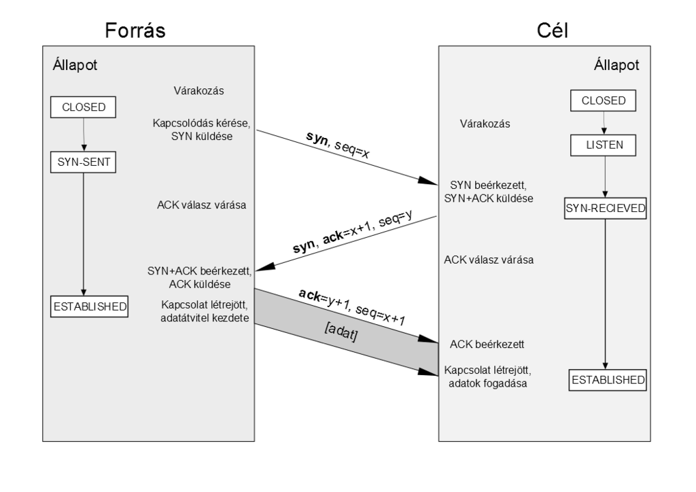
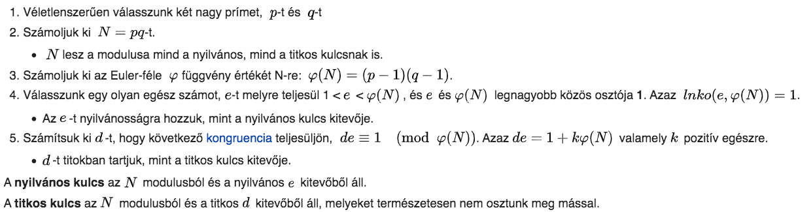

Magas szintű adatkapcsolati protokoll kétpontos vonalakhoz. (pl két router között)
Széleskörűen alkalmazzák széleskörű kapcsolatoknál, ahol nagy adatok és gyorsaság van.
Szolgáltatásai:
egyértelműen ábrázolja a keret végét és a következő keret elejét, a keretformátum megoldja a hibajelzést is
adatkapcsolat-vezérlő protokollt tartalmaz a vonalak felélesztésére, tesztelésére, vonalak bontására
különböző hálózati vezérlő protokollokat tartalmaz mindegyik támogatott hálózati réteghez
Keret formátum
| Bájtok: | 1 | 1 | 1 | 1 VAGY 2 | Változó | 2 VAGY 4 | 1 |
|---------|-------|-----|---------|-----------|---------------|------------------|-------|
| Mezők: | Jelző | Cím | Vezérlő | Protokoll | Payload | Ellenörző összeg | Jelző |
Jelző: Az elejét és a végét jelző keret. (általában 01111110)
Vezérlő: Egy konstans érték 11000000
Protokoll: Definiálja a payload field típusát
Payload: Az adat a hálózati rétegből. Max 1500 byte.
Ellenörző összeg: Error detektálásra.
adatkapcsolati protokoll
Az Ethernet egy számítógépes hálózati technológiák családja, amelyet
helyi hálozatban (LAN),
városi hálózatokban (MAN) és
nagy kiterjedésű hálózatokban (WAN) használnak.
Az Ethernet esetén a közeg, egy speciális koaxális kábel volt kezdetben. Ez akár 2,5km hosszú is lehetett jelismétlőkkel. Ezekre legfeljebb 256 gépet lehetett csatlakoztatni.
Az IEEE 802.3 szabványt a napjainkban is használatos megoldások alapjának tekinthetőek.
Napjainkban a kezdetben elérhető 10 Mbit/s sebesség már többszöröse is elérhető. Akár az új IEEE 802.3cn szabvánnyal már 400 Gbit/s sebességet is definiálhatunk
Az Ethernet egy állomása a közvetítő közeggel (kábel) való állandó kapcsolatot kihasználva bele tud hallgatni a csatornába, így ki tudja várni, amíg a csatorna felszabadul, és a saját üzenetét leadhatja anélkül, hogy ezzel más üzenet sérüljön, tehát a torlódás elkerülhető. A csatornát az állomások folyamatosan figyelik, ha ütközést tapasztalnak, akkor zavarni kezdik a csatornát, hogy figyelmeztessék a küldőket, ezután véletlen ideig várnak, majd adni kezdenek. Ha ezek után további ütközések történnek, az eljárás ugyanez, de a véletlenszerű várakozás idejét kétszeresére növelik, így időben szétszórják a versenyhelyzeteket, esélyt adva arra, hogy valaki adni tudjon.
Hálózati protokoll
Az internet hálózat egyik alapvető szabványa (avagy protokollja). Ezen protokoll segítségével kommunikálnak egymással az internetre kötött csomópontok (számítógépek, hálózati eszközök, webkamerák stb.). A protokoll meghatározza az egymásnak küldhető üzenetek felépítését, sorrendjét stb.
Az IP a klasszikus OSI besorolás alapján a 3. a Hálózati rétegben helyezkedik el.
Csomagkapcsolt hálózatot valósít meg, azaz nem építi fel a kapcsolatot a forrás és a cél között, hanem minden egyes csomagot külön irányít (route-ol).
Hibadetektálást és hibajavítást nem végez (ezeket nevezzük „megbízhatatlan” protokollnak), ezeket a funkciókat főleg a szállítási rétegben elhelyezkedő protokollokra bízza (például TCP). Ennek a kialakításnak az oka az, hogy az egyszerűségre törekedtek. Így a hibajavítás terhe főképp a forrás és a cél számítógépeknél jelentkezik, és nem terheli feleslegesen az egyébként is leterhelt hálózati útirányválasztó csomópontokat (router).
Az IP cím egy egyedi hálózati azonosító, amelyet az internetprotokoll segítségével kommunikáló gépek egymás azonosítására használnak.
Egy IP cím nem kötődik feltétlen egy eszközhöz, akár több eszköz osztozhat egy címen. (NAT), vagy a gép címe rendszeresen változhat ISP-n keresztül
Az IP-ben a forrás- és célállomásokat (az úgynevezett hostokat) címekkel (IP-címek) azonosítja, amelyek 32 biten ábrázolt egész számok; azonban ezt hagyományosan négy darab 8 bites (azaz 1 byte-os, vagyis 0 és 255 közé eső), ponttal elválasztott számmal írjuk le a könnyebb olvashatóság miatt (pl: 192.168.42.1).
A címek felépítése hierarchikus: a szám bal oldala (vagy szakmai nevén a legnagyobb helyiértékű bitek felől indulva) a legfelső szintet jelenti, és jobbra haladva az ez alatti szinteket kapjuk meg, például egy szolgáltatót, a szolgáltató alatti ügyfeleket, és az ügyfelek alatti egyes számítógépeket.
A teljes IP-cím két részre osztható:
egy hálózati azonosítókból
egy host azonosítókból áll.
A hálózati azonosító hossza változó méretű lehet, azt a teljes cím első bitjei határozzák meg, az IP- címeket ez alapján címosztályokba soroljuk.
A címosztályok alkalmazása lehetővé teszi a címek optimálisabb kiosztását, azáltal, hogy egy intézmény, szervezet stb. számára egy alacsonyabb osztályú cím is kiosztható adott esetben (kevés hosztja van) így nem foglal le felesleges - fel nem használt, ki nem osztott - címeket, ha nincs rájuk szüksége.
Különböző IPv4 címtartományok:
24 bites tömb (/8 prefix) : 10.0.0.0 - 10.255.255.255
20 bites tömb (/12 prefix) : 172.16.0.0 - 172.31.255.255
16 bites tömb (/16 prefix) : 192.168.0.0- 192.168.255.255
Annak az érdekében, hogy a szervezetek a nekik kiosztott címosztályokat további alhálózatokra bonthassák, vezették be az alhálózatot jelölő maszkot. Ezzel lehetővé válik pl. egy B osztályú cím két vagy több tartományra bontása, így elkerülhető további internetcímek igénylése.
Az alhálózati maszk szintén 32 bitből áll: az IP-cím hálózati részének hosszáig csupa egyeseket tartalmaz, utána nullákkal egészül ki - így egy logikai ÉS művelettel a hoszt mindig megállapíthatja egy címről, hogy az ő hálózatában van-e.
Az IP-címekhez hasonlóan az alhálózati maszkot is byte-onként (pontozott decimális formában) szokás megadni - például 255.255.255.0 . De gyakran találkozhatunk az egyszerűsített formával - például a 192.168.1.1/24 - ahol az IP-cím után elválasztva az alhálózati maszk 1-es bitjeinek a számát jelezzük.
A hagyományos IP protokoll szerinti IP-címeket nevezzük „IPv4” címeknek is, ami a negyedik generációs internetprotokollt jelenti. Bár kezdetben jól megfelelt, az internet előre nem látott növekedése közben sok problémába felmerült. Egyik ilyen az, hogy nem elégséges a kiosztott címek mennyisége. Gondot jelent, hogy nem támogatja a protokoll a mobilitást, nincs lehetőség benne korrekt titkosítás támogatására stb. Ezek megoldására jött létre az IPv6.
Előnyei
Nagyon nagy megcímezhető tartomány, mostmár minden egyes eszköznek jut IP-cím, például a mosógépnek, de még a kutyának is. A végfelhasználó számára láthatatlan marad, hogy ő IPv6-ot használ. Új szolgáltatások jelennek meg, melyek az IPv4-gyel nem jöhettek volna létre, tehát új lehetőségeket rejt magában.
Címzés
Az IPv6-címek 32 bit helyett 128 biten ábrázolják a címeket (ez olyan, mintha a mostani 4 helyett 16 byte-ból álló IP-címeket használnánk), ezért azokat hexadecimális formában szokás jelölni, például 3ffe:2f80:3912:1.
Az cím 8 részét kettőspontokkal szokás elválasztani, és ha egy rész csak 0-kból áll akkor megtehetjük, hogy üresen hagyjuk azt a részt, de a kettőspontok maradjanak meg. Például ha egy IPv6 címünk a következő módon néz ki: fe80:0000:0000:0000:0202:b3ff:fe1e:8329, akkor felírhatjuk így is: fe80::202:b3ff:fe1e:8329.
Az első mező, a Verzió (Version), amely megegyezik az IPv4 Verzió mezőjével, csak itt a 6-os konstans szerepel.
A Forgalmi osztály (Traffic Class) mezőt arra használják, hogy a különböző valós idejű szállítási követelményekkel rendelkező csomagok között különbséget tegyenek.
A Folyamcímke (Flow Label) mezőt majd arra lehet használni, hogy egy forrás és egy cél között felállíthasson egy álösszeköttetést bizonyos tulajdonságokkal és igényekkel. Például egy bizonyos hoszt bizonyos folyamatától egy bizonyos célhoszt bizonyos folyamatáig tartó csomagfolyamnak szigorú késleltetési igényei lehetnek, és ezért fenntartott sávszélességre van szüksége. A folyamot előre fel lehet állítani, és egy azonosítót adni neki.
Az Adatmező hossza (Payload Length) mező megmondja, hogy mennyi bájt következik ezután a mező után. A jelentése megváltozott az IPv4 Teljes hossz mezőjéhez képest, hiszen itt az első 40 bájtot már nem számolják bele a mező értékébe.
(opcionális) A Következő fejrész (Next Header) mező mondja meg, hogy a hat kiegészítő fejrész közül melyik következik. Ha a fejrész az utolsó IP-fejrész, akkor a mező azt mondja meg, hogy melyik szállítási protokoll kezelőjének (TCP, UDP, stb.) kell a csomagot továbbítani.
Az Átugráskorlát (Hop Limit) gátolja meg a csomagokat abban, hogy örökké élhessenek. Ez gyakorlatilag ugyan az, mint az Élettartam volt az IPv4-ben.
Ezek után következnek a Forrás címe (Source Address) és a Cél címe (Destination Address) mezők, amelyek egy-egy 16 bájtos (128 bites) címet takarnak
A TCP egy kapcsolat-orientált protokoll, amely az OSI modell Szállítási rétegében helyezkedik el. Fő feladata egy megbízható, és biztonságos kapcsolat kiépítése (és fenntartása) két folyamat között. Menetét alapvetően három részre bonthatjuk:
Létrejön a megbízható kapcsolat két állomás között
Megkezdődik a tényleges adatátvitel
A kapcsolat lezárása, és a számára elkülönített erőforrások felszabadítása.
A protokoll a hibamentes átvitelhez az úgynevezett pozitív nyugtázás újraküldéssel (positive acknowledgement with retransmission) néven ismert eljárást használja.
A TCP kapcsolatok egyes lépéseit állapotoknak nevezzük. A kapcsolat élettartama alatt különböző állapotváltozásokon megy keresztül:
A leírásban szereplő három rövidítés TCP üzenettípusokat jelöl, melyeket a fejlécben szereplő megfelelő bitek segítségével lehet változtatni.
SYN: szinkronizációs üzenet, kapcsolat létrehozására, ill. fenntartására irányuló kérés.
FIN: kapcsolat bontására irányuló kérés.
ACK: nyugtázó üzenet, SYN/FIN üzenetre küldött válasz, ezzel jelezvén az üzenet átvételét.
A TCP protokoll ellentétben az UDP-vel kapcsolatorientált, megbízható összeköttetést biztosít két eszköz között.
Az adatátvitel megkezdéséhez a forrás-, és a célalkalmazás értesíti az operációs rendszert a kapcsolat létrehozási szándékáról.
Az egyik csomópont kezdeményezi a kapcsolatot, a másiknak pedig fogadnia kell azt.
A két operációs rendszer protokoll-szoftvermoduljai a hálózaton elküldött üzenetekkel kapcsolatba lépnek egymással és ellenőrzik, hogy az adatküldés engedélyezett-e, illetve, hogy mindkét oldal készen áll-e.
Ezután a kapcsolat létrejön, a szükséges szinkronizálások elvégzése után pedig megkezdődik az adatok átvitele.
Az átvitel során a két készülék protokollszoftverei közötti kapcsolat a megérkezett adatok helyességének ellenőrzése céljából változatlanul fennmarad.
Az adatátvitel megkezdése előtt kapcsolatot kell létesíteni a két végpont között. Mivel egy TCP szegmensben a maximálisan szállítható adat mérete korlátos, a protokollnak fel kell darabolnia az ennél nagyobb méretű adatfolyamot, majd a másik oldalon ugyanazon sorrendben vissza kell állítani azt. A kapcsolat létrehozásakor szükséges mindkét fél kezdő sorszámának egyeztetése, melyet a SYN vezérlőbittel megjelölt szegmensek elküldésével tesznek meg. Ezt a kapcsolódási folyamatot nevezzük háromfázisú kézfogásnak, melynek lépései a következők:
Forrásállomás (A) kezdeményezi a kapcsolat létrehozását a célállomással (B), egy SYN szegmens elküldésével, melyben jelzi kezdősorszámát is (seq=x).
B megkapja a szegmenst és feljegyzi az A állomás kezdősorszámát, majd küld egy nyugtát a következő szegmens sorszámával (ack=x+1), és saját kezdő sorszámával (seq=y). Ezzel jelzi, hogy épségben megkapta x-edik oktettig a szegmenst, és várja x+1-edik sorszámtól a többi darabot.
Az A állomás megkapja a választ, melyből megtudja a B állomás kezdő sorszámát (y) és elküldi a következő szegmenst, egyben nyugtázva is a kérést (ack=y+1).
Ezután megkezdődik az adatok átvitele, és a kapcsolat mindaddig nyitva marad, amíg bármelyik fél nem kéri annak lezárását.
Ablakozás
Az adatátvitel gyorsítása érdekében a TCP protokoll nem várja meg a nyugtát minden egyes szegmens elküldése előtt, mivel az nagyon lassú kapcsolatot eredményezne, helyette több szegmens elküldését is engedélyezi a nyugta beérkezése előtt.
Mivel a hálózaton található eszközök és állomások tulajdonságai eltérőek, fontos egy adatfolyam-vezérlési mechanizmus meghatározása az ilyen protokollok esetén. Ennek hiányában a küldő fél könnyen túlterhelheti a fogadó felet, megfelelően nagy számú szegmens küldésével, és így az adatok egy része elveszik. A TCP esetén ezt az adatfolyam-vezérlési mechanizmust „ablakozásnak”, a nyugta előtt elküldhető szegmensek számát pedig ablakméretnek nevezzük. A kifejezés arra utal, hogy a kapcsolatban kommunikáló felek dinamikusan határozzák meg az elküldhető szegmensek számát (vagyis az ablakméretet).
Menete:
Az ablakozás megköveteli, hogy a forrás adott mennyiségű adat elküldése után nyugtát kapjon a céltól. A TCP erre várományos nyugtákat használ, tehát minden nyugtában a következőként várt csomag sorszáma szerepel (vagyis nem kell minden csomag után egy külön nyugtát küldeni).
Ha a célállomás nem kapja meg a csomagot, akkor nem küld róla nyugtát. Amennyiben a forrás nem kap nyugtát az elküldött csomagról, akkor tudja, hogy a sebességet csökkentenie kell és újra kell küldeni a nem nyugtázott szegmenseket.
A fogadó közli az ablakméretet a küldő féllel, ami megadja, hogy hány szegmens vételére van felkészülve, és az ezen felül küldött szegmenseket figyelmen kívül hagyja. Az első érkező szegmens az ablakméret nyugtázása.
Nyugtázás
A megbízható kézbesítés garantálja, hogy a kommunikáció során elküldött adatok veszteség, vagy kettőződés nélkül elérik a céljukat. Ennek érdekében a hibamentes átvitelhez, a TCP protokoll, az úgynevezett pozitív nyugtázás újraküldéssel (positive acknowledgement with retransmission) néven ismert eljárást használja.
Menete:
a forrás elküldi az 1, 2 és 3 sorszámú csomagokat.
A forrás jelzi, hogy következőként a 4-es csomagot várja, ezzel nyugtázza az elküldötteket.
Amikor a forrás megkapja a nyugtát, elküldi a 4, 5 és 6 sorszámú csomagokat.
Ha az 5-ös csomag nem érkezik meg a vevőhöz, akkor az nyugtájával az 5-ös csomag újraküldését fogja kérni.
A forrás újraküldi az 5-ös csomagot, majd majd kap egy olyan nyugtát, hogy a 7-es csomag elküldésével folytassa az átvitelt.
Amikor a TCP elküld egy adatokat tartalmazó szegmenst a hálózaton, elhelyez egy másolatot az újraküldési sorban is, és elindít egy időzítőt, majd amint megérkezik a másik féltől a nyugta, törli a szegmenst a sorból. Ha az időzítő lejárta előtt mégse kap nyugtát a küldő fél (vagyis a célállomás feltehetően nem kapta meg a csomagot), akkor a szegmenst újraküldi.
A HTTP (HyperText Transfer Protocol - hipertext átviteli protokoll) a Világháló általános információ átviteli protokollja. A protokoll meghatározza, hogy az ügyfelek milyen üzeneteket küldhetnek a kiszolgálóknak, és hogy ezekre milyen válaszokat kaphatnak.
TCP/IP felett helyezkedik el.
Kapcsolat
HTTP kliens úgy kezdeményez egy kérést, hogy TCP kapcsolatot létesít egy szerver egy adott portjával (általában 80-as).
Azon a porton hallgató HTTP szerver várja az ügyfél kérési üzenetét.
A kérelem beérkezésekor a szerver visszaküld egy állapotvonalat, például “HTTP / 1.1 200 OK”, és egy saját üzenetet.
Ennek az üzenetnek a törzse általában a kért erőforrás, bár hibaüzenetet vagy más információt is küldhet.
A TCP használatának előnye az, hogy sem a böngészőnek, sem a kiszolgálónak nem kell aggódnia az elveszett, megkettőzött vagy hosszú üzenetek, illetve a nyugták miatt. Az összes ilyen kérdésről a TCP-implementáció gondoskodik.
Verziók
A HTTP 1.0-ben az összeköttetés kiépítése után egyetlen kérést küldtek el, amire egyetlen válasz érkezett. Ezután a TCP-összeköttetést lebontották.
Ezután jött a HTTP 1.1 ami már támogatja a tartós kapcsolatokat. Ezáltal lehetővé vált, hogy kiépítsünk egy TCP összeköttetést, elküldjünk egy kérést, megkapjuk a választ, majd pedig további kéréseket küldjünk és válaszokat kapjunk. Azáltal, hogy több kérés esetén nem kell külön TCP-kiépítés és lebontás, az egyes kérésekre jutó, a TCP által okozott relatív többletterhelés sokkal kisebb lesz.
Kérés (request)
Egy HTTP kérés első sora mindig METÓDUS ERŐFORRÁS VERZIÓ alakú, például:
GET /images/logo.gif HTTP/1.1
Ezt a sort követheti tetszőleges számú header sor ,HEADER: ÉRTÉK" alakban, például így:
Host: example.com
Connection: close
User-Agent: Mozilla/5.0 (Windows; U; Windows NT 5.1; de; rv:1.9) Gecko/2008052906 Firefox/3.0 (webböngésző)
Accept-Charset: ISO-8859-1,UTF-8;q=0.7,*;q=0.7 (karakterkódolás)
Cache-Control: no-cache
Accept-Language: de,en;q=0.7,en-us;q=0.3
HTTP protokoll nyolcféle metódust definiál. A metódusok a megadott erőforráson végzendő műveletet határozzák meg.
Válasz(response)
A HTTP válasz első sora a státuszsor, amely “VERZIÓ STÁTUSZKÓD INDOKLÁS” alakú.
HTTP/1.1 200 OK
A státuszsor után header sorok következhetnek a HTTP kérésnél látott módon “HEADERNÉV: ÉRTÉK” alakban. Például
Server: Apache (a serveren futó szoftver)
Date: Sat, 24 Mar 2012 16:49:31 GMT
Content-type: text/html (válaszban elküldött szöveg típusa)
Pragma: no-cache
Connection: close
Különböző HTTP metódusokat hozhatunk létre (8 db):
GET: Megadottt erőfáros letöltését kezdeményezi
POST: Feldolgozandó adatot küld a szerverre
PUT: Feltölti a megadott forrást
DELETE: Kitörli az adott erőforrást
Az RSA-eljárás nyílt kulcsú (vagyis „aszimmetrikus”) titkosító algoritmus. Ez napjaink egyik leggyakrabban használt titkosítási eljárása. Az eljárás elméleti alapjait a moduláris számelmélet és a prímszámelmélet egyes tételei jelentik.
Az RSA-titkosításhoz egy nyílt és egy titkos kulcs tartozik. A nyílt kulcs mindenki számára ismert, s ennek segítségével kódolhatják mások nekünk szánt üzeneteiket. A nyílt kulccsal kódolt üzenetet csak a titkos kulccsal tudjuk “megfejteni”.
Az RSA-eljáráshoz a következő módon generáljuk a kulcsokat:
